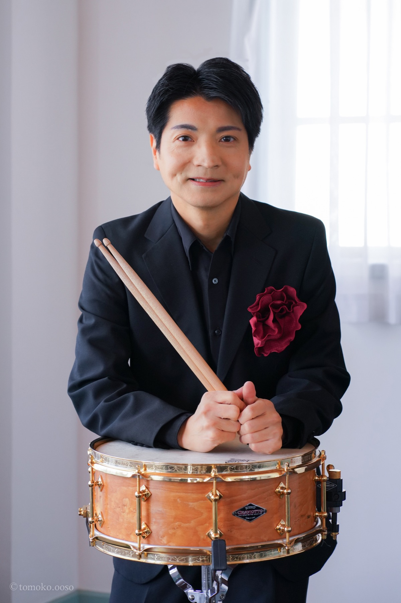

ドラマー・打楽器奏者・指揮者・編曲家として、ジャンルを超えた演奏活動を展開する阿部拓也の公式サイトです。
最新スケジュールを見る
埼玉県生まれ。クラシックからジャズ、ロックまでジャンルを超えた幅広い演奏活動を展開する一方、三芳ウインドオーケストラの創立者・音楽監督として指揮活動も行う。学校・企業向けのワークショップや吹奏楽指導にも力を注いでいる。
プロフィールを読む榎田竜路(Vo,Gt)との2ピースユニット。国内外でライブ活動を展開。
2016年創立、音楽監督兼常任指揮を務める市民吹奏楽団。
阿部拓也が主宰するパーカッションアンサンブル。